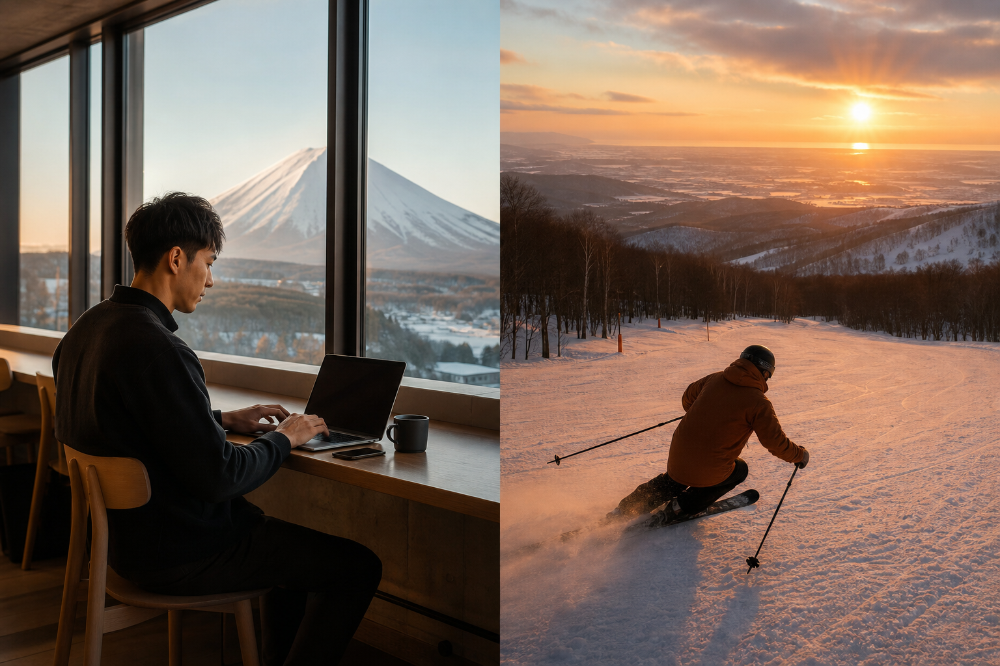
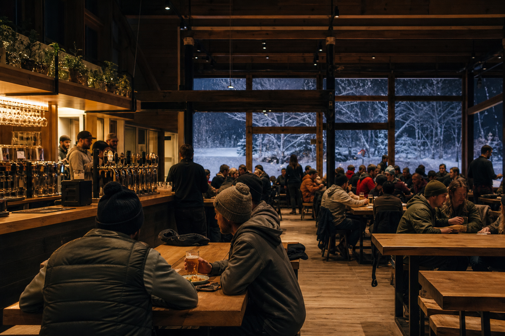
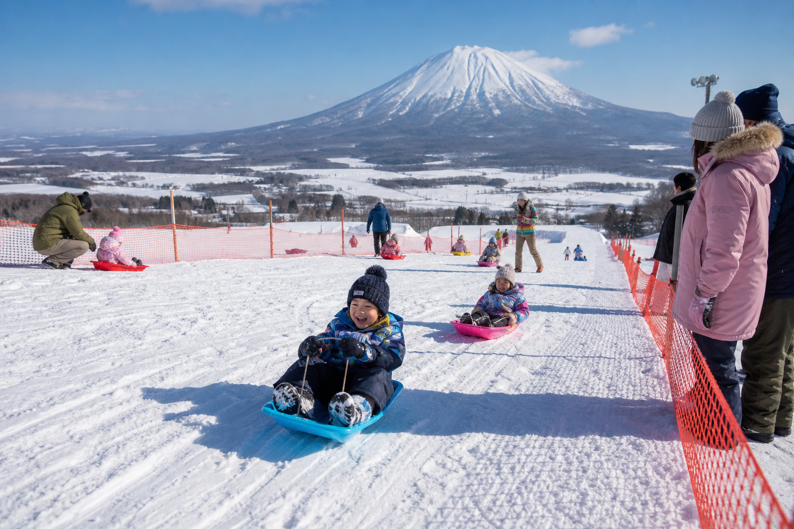

羊蹄山ビュー × ローカルヒル
全コースから羊蹄山を望む、倶知安町営のコンパクトゲレンデ。最大斜度30°の2コース560m——巨大リゾートの雪質圏内にありながら、待ち時間と混雑から解放される「ニセコの裏庭」。
コース・ビューを見る北海道倶知安町 · ニセコの隣
リフト待ちのない、ニセコの隠れたローカルヒル。
地元日券 ¥1,500 Visitor Pass ¥4,500 そり専用ゾーン更新 6/13 9:00
リフト
運行中
ペアリフト1基 · 待ち時間ほぼなし
コース
2コース
全長560m · 最大30°
ナイター
21:00まで
火・木 9:00〜
ビュー
羊蹄山
ゲレンデ全域から眺望
Niseko Gap
ヒラフ・アンヌプリの混雑と物価高騰から一歩外れて、倶知安駅・市街地から車で約3分。ペアリフト1基・2コース560m——「ニセコに来たのに滑れなかった」層と、地元ファミリー双方を受け止めるローカル・サンクチュアリ。
旭ヶ丘の魅力
全コースから羊蹄山を望む、倶知安町営のコンパクトゲレンデ。最大斜度30°の2コース560m——巨大リゾートの雪質圏内にありながら、待ち時間と混雑から解放される「ニセコの裏庭」。
コース・ビューを見るスキー斜面と物理的に区画されたそり専用コース。小さな子どもが滑走エリアに入らない設計——「ニセコで一番ファミリーにやさしいローカルヒル」としての差別化軸。
ファミリーゾーン案内Dual Pricing
町民・地元向け日券¥1,500を維持しつつ、インバウンド・リゾート宿泊者向けにKutchan Visitor Pass（¥4,500）を設定——ニセコ周辺の相場に対する戦略的な二重料金モデル（LP案）。
Local
地元日券 ¥1,500
Visitor
Visitor Pass ¥4,500

Delivery Pack
倶知安のBoom Sportsと連携したデリバリーレンタルパック。スキー・スノーボード・ウェアを宿泊先に事前配送——車なし・手ぶらのリゾート滞在者が、そのまま旭ヶ丘へ。
ロッジでの対面貸出負荷を軽減し、ニセコ圏の「手ぶら来場」需要を旭ヶ丘に誘導する——売上倍増の外部シナジー施策。
デリバリーパックを予約Yukinko Hall
ゲレンデ直結の雪ん子館（ゆきんこかん）でF&Bと休憩。火・木のナイター（〜21:00）に合わせたナイトスノーバー——滑走後の二次消費と滞在時間延伸の拠点。
冬期 TEL 0136-23-2743（雪ん子館）。ロッジ食から「旭ヶ丘の夜」体験へ——地元の温かさを演出するF&Bハブ。
雪ん子館メニュー・営業

Family First
そり専用ゾーン、コンパクトな2コース、リフト待ちなし——小さな子ども連れでも一日ストレスなく過ごせる。地元ファミリーの「日常のゲレンデ」として、インバウンドのファミリー層も受け入れる。
Workation
倶知安市街地のコワーキングや宿泊施設から車で約3分——短時間パスで「仕事と滑走」を両立するワーケーション層向けジャーニー。
SHORT-TIME PASS · LOCAL HILL01
倶知安ベース
市街地の宿泊・コワーキングで午前リモート
02
デリバリーレンタル
Boom Sportsからギアを宿泊先へ事前配送
03
旭ヶ丘 短時間パス
3時間券でコンパクト2コースを効率滑走
04
雪ん子館
F&Bで休憩。火・木はナイターまで延長可
05
市街地に戻る
約3分で倶知安中心部——夕食・温泉へ
特集
Access